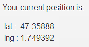
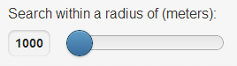

Here you can see your current position

You can set the radius of your search by moving the slider button

If you have changed your location and the "current position" value is still the previous one, you can reload your
current location by taping on "reload lat and lng" button